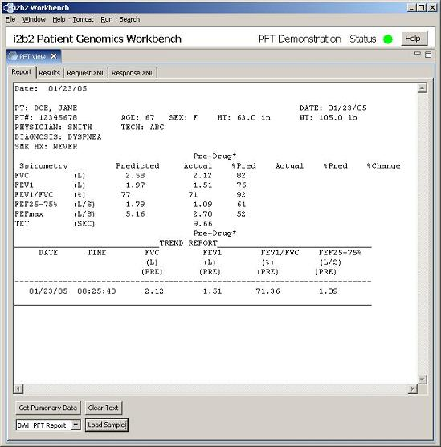

Report Tab
The report tab contains a large text area to type, paste or load a text report and some
buttons that are used to send a report to be processed by a PFT service. These features
are described, below.
- Get Pulmonary Data
- Process the report for a list of PFT concepts contained therein.
- Clear Text
- Clear all previous processing submissions from the display.
- Load Sample
- Load a sample PFT report for processing.
- Report Type Drop-Down Menu
- Choose which type of report is inside the text area.
